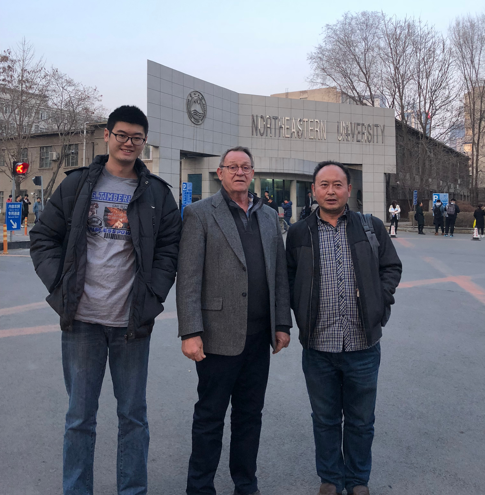

Finding a solution
North Eastern University
Nature’s Way Water Technologies has entered into a Technology collaboration agreement with a Chinese company and North Eastern Technology University to help deliver our drinking water products to the Chinese market. Robert Schultz and Jacky Lui recently travelled to the university in March 2018 to help train and teach the university on the benefits of safe mineral balanced water for use at the household level.
International scientifically certified drinking water analysis should be provided by suppliers of all household drinking water appliances. Nature’s Way Water Technology constantly have have our drinking water treatment comply with World Health and International standards as evidenced bySGS validation on the quality of our mineral balanced water in Australia. Northeastern University in China has conducted tests on our drinking water POU in China which validated that our drinking water treatment technology meets new demanding Chinese drinking water standards?
Research Institute
We will be working with Northeastern University to find better solutions to the water quality problems throughout China.
Future Plans
Our goal is to take our POUs global to ensure that every person in the world has access to clean mineral balanced water. If you fear that your water is undrinkable and your only treatments are through Reverse Osmosis, then contact us and we will work with you to ensure that you water is both clean and healthy.